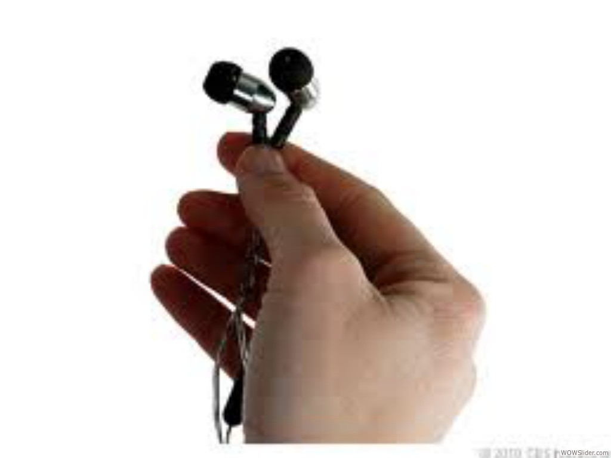

- Kiosks in Airline terminals to get REAL feedback from customers
- Old customers/Frequent Flyers - "Will work for miles."…….New/Leisure customers - "Give feedback & spin the wheel for prizes". Idea here is that Frequent Flyers want to see core functionality fixed and firmed up; they will be there regardless because of earned loyalty miles. New/Leisure customers want a new experience, incentives, & the entertainment factor (see Market Differentiation section below)
- Enhance Airline's "Glass Bottom Jet" on iPad to show more information about what you are flying over. Think VH-1's "Pop-Up video" as you travel.
- Words With Friends??? How about playing the exciting word-find game against a random passenger on your same flight!
- Imagine the passengers on Flt #DL1746 from Miami to Atlanta engaging in a head to head trivia battle with the passengers on Flt #DL902 every day the week leading up to the big game between the Miami Dolphins and the Atlanta Falcons! Random head to head flights...Sports City rivalries...it doesn't matter! The passengers will just get a kick out of competing. Even keep Flt.# head to head stats and inform the passengers before the flight begins.
- On board flight SIM. Passengers try to fly the plane and compete amongst each other and maybe with the pilot to see who wins (smooth landing, fuel consumption etc etc could win/lose points)
- Whenever a flight is delayed stress levels rise. The thought that you could easily check what the status is and what the options are, while you're in flight would be awesome. Take the stress away and make me feel like I have some level of control.
 Let you know when you are on an overbooked flight and might be asked to trade your ticket. That way if you could easily delay your flight, you could make alternate plans and pocket the incentive.
Let you know when you are on an overbooked flight and might be asked to trade your ticket. That way if you could easily delay your flight, you could make alternate plans and pocket the incentive.- Series of exercises to help nervous flyers work through anxiety caused by bumpy flights.
 providing personalized inflight entertainment options for first class/business class customers who fly often. suggesting generes based on last viewed or in previous flight
providing personalized inflight entertainment options for first class/business class customers who fly often. suggesting generes based on last viewed or in previous flight- Healthy choice food options can be limited at the airport. Point me to food options that will help me make a good food choice.
- Give me a way to apply for upgrades, and notify me when my Medallion upgrades happen (it's buried in the app now)
- Will I have to gate check my bag because it's a small plane?
- Ability to make same day changes on the mobile app vs. having to call the Airline support line or logging on a computer
- When I click on "My Wallet" allows me to see my credits and certificates, similar to what I see when I log into the website on a computer and go to "My Wallet"
- When I log into the mobile app allows me to check-in based on my location and push to my social profiles like Facebook, Four Square, Twitter, etc
- I use mobile apps most when things are going wrong. Flight delays. Cancelled flights. Missed connections. Today I use a combination of apps to figure out if my delayed flight is leaving (by seeing where the plane is—e.g. recently stuck at DCA and saw that my inbound plane had been redirected to IAD because of weather and so there was no way my flight was leaving when the airline said it was) and to figure out alternate routes (ITA Flight Matrix, Kayak), and then CALL customer service to get rebooked.
No reason the Airline app couldn't integrate all of that—e.g. show me the offical delay info (can't trust that) and inbound flight info, let me track where my actual plane is, let me search alternate routings, and let me rebook them.
And all of this should be _status_ aware. There are things as a Platinum I can talk them into (like flying me YYZ->DFW->PDX on American Airlines when the YYZ->DTW->PDX I had booked was all messed up) that I don't think non-status folks can.
- "How was your flight?" feedback form / pop-up just prior to landing - fields adjusted based on both length of flight and status / frequency of flying of passenger. Integrate suggestion box for the app into the app.
- tell me the shortest security line (elite/pre-check) as i arrive at the airport so i can tell the cab where to drop me off
tell me travel time (including queues) to my gate + delays
tell me the nearest power plugs and if they are free :)
auto check me in as i approach the airport and offer alternate flights
- What about a feature that would allow me to donate the miles for a flight to a charity of my choice. Trust me, its far easier to feel charitable in small increments than large ones. I think Airline would be amazed at the influx of miles if they did this. And everyone wins!!!
- within a given trip take a picture/write a note about where you parked. This is in the AA app but not United and is GREAT
- Can we just have this everywhere - it's so cheap so give it to us at the gate, on the plane anywhere where we have to wait around for a Airline plane
- "Give a burn rate such as 10 points per minute. I would totally spend 1500 points for a 150 minute flight. In the days of point inflation, seems like
win-win for everyone"
- Not just some single brand app saying "Check out our VIP lounges!" - but rather, something that allows me to either slice all the lounges and what card/pass/ticket requirements to access them at a connecting or departing airport, or the other way, show me all the lounges based on a profile I've created or flight I've got entered. Often people have access to lounges and don't know it based on things like, for example, a privileged bank card or hotel group membership. I'd love something that tells me when the stuff I have meets requirements for a VIP lounge and there's one in the airport I'm going through!
- utilizing Mac iOS 7's "iBeacon" proximity technology to 1) welcome customers to the gate on their mobile device, 2) automatic pushes to get on waiting/upgrade lists when in proximity of departure gate, 3) automatic coupons if a flight departure is delayed, 4) Passenger Tracking....ANY MORE iBeacon uses???
- Passengers could access a camera view showing what the pilot sees out of the aircraft's front windshield from their iPad device. LAN access only to camera view on the passengers current/immediate flight/equipment. See the friendly skys from a view that you have never witnessed before! Pilot/co-pilot could periodically post/message notable observations on screen as they fly. (only accessible when plain is at cruising altitude; not available during takeoff and landing)
- Being able to see where the airplane I am sitting in was coming from, where it is going after my flight, how many passengers can travel, how long it has flied, how many celebrities have traveled on that plane, etc.
- For the geographically challenged, tips to get out of the airport, nearest money exchange etc., taxis, other amenities
- Traveling with young children has to be one of the hardest things to do (or watch). Think of creating something specific for the under six set that is Airline specific.
- Traveling with young children has to be one of the hardest things to do (or watch). Think of creating something specific for the under six set that is Airline specific.
- Link my account to TripIt so the reservation automagically shows up in TripIt (and I don't need to forward the email)
- Allow me to pick and choose my entertainment whilst waiting for the plane at the airport through my phone. Then on the plane, my screen does exactly as planned. A bonus feature would be to allow me to stream my content to the individual screen
- Devices capable to interacting with smart phone installed on seats, and as soon as someone is boarding, announcing Mr. XXX welcome to the flight your seat is YY with direction and when user passed seat YY-1 then announce your seat next
- Buzz/IVR call on mobile for boarding announcement
- Book Massage (assumption 1 seat fitted with massage options), On long haul flight - ability to request movies, etc
- For upcoming trip show weather info, clothes packing recommendations, Reminder for check-in
- Food and Drinks Menu based on availability in the flight. Ability to order what you want instead of waiting for the inflight staff to get to you.
 air miles added to my account as soon as I board the plane. Having to save ticket stubs and do it some time later seems a waste of time and a way for the airline to avoid giving the miles. I know this automatically happens if I have booked and presented my card but sometimes I don't have the member id when I buy or the Oz Travel team book for me so I have to manually do this later.
air miles added to my account as soon as I board the plane. Having to save ticket stubs and do it some time later seems a waste of time and a way for the airline to avoid giving the miles. I know this automatically happens if I have booked and presented my card but sometimes I don't have the member id when I buy or the Oz Travel team book for me so I have to manually do this later.- baggage tracking if I have a multi-stop flight where my bags are being transferred. I always get very paranoid that my bag is not on the second plane.
- advice on security and passport control waiting times at the airport
- the ability to order drinks / snacks / blankets / etc from your mobile device
- "Piggybacking on the above suggestions I would love to have either a seperate ""inflight"" app or
have the app switch to ""in-flight"" mode. I would love to see both the above features and potentially some others that really
empower the user and address the different set of needs when on a flight (trip info, call attendant, distance/time remaining,
notes from the crew. I think that the Virgin inflight experience is nice step in that direction but you can achieve the same or
better by allowing customers to use their own devices while saving hardware costs."
- A carry on traveller, being at the airport receives last minute deals to fly right away on empty spots in the flight.
- The ability to open the app and using the phones GPS, be able to track the plane's current location/direction/speed overlayed on a map that also points out points of interest like cities, lakes, mountains. Might include a push alert when something interesting to look at is coming up on the route.
- Ability to choose your entertainment ..for e.g. Choosing which movie to watch before hand makes it experience nice. or allowing passengers to play games gainst each other or may be chat with each other.(more like a whatsapp inflight) makes the travel intresting especially if its a long one..
- Download it to your device, pay with points. Special deals / exclusive opportunities to purchase content. Could look into partnership with iTunes, etc.
- Books to download to your device - special offers - curated choice. Bonus feature - an in-flight (post-flight?) book club discussion. Frequent flyers may wish to return to the discussion on subsequent flights. Could look into partnership with Amazon / Kindle, etc.
- Teach me about cloud shapes so that when we are flying and I see one out of the window, I can tell if it is going to get bumpy.
- My husband and I are both flying to different places and return to the same place. What are the best flights for us to catch so that we are not waiting at the airport for too long either departing or arriving. Oh and also has time constraints to be entered
- As a frequent flyer knowing the equipment is important to seat selection and on medium and long haul flights I will prioritise flights based on equipment. I'd like to know if that is changed so that I can potentially change my seat selection
- before leaving home it would be nice to have an estimated queuing time at security - this lets me know how much time is required and could have the option of selling me fast-track security option
- Have an option on the app to indicate that I am open to meeting the people sitting around me for social / business networking purposes with a brief bio, if someone else sitting next to me has also done this then introduce us - I've met a lot of interesting people while flying.
 vouchers for food/coffee outlets at the airport. No I don't have a business lounge access but I would like a decent coffee that isn't ridiculously priced before I board.
vouchers for food/coffee outlets at the airport. No I don't have a business lounge access but I would like a decent coffee that isn't ridiculously priced before I board.- after arrival at the airport, notifications on my phone of boarding times/gate number and distance/walking time to gate.
- local exchange rate at destination if international flight and approx costs for a taxi to the city, a beer, a meal at restaurant
- transport comparison options of getting from airport to city at destination (bus, taxi, train costs and time it takes)
- As a frequent traveler, I want to be able to add myself to the stand-by list for another flight so that I can manage my travel without having to call customer service.
 Arriving in a foreign country where English is not the primary language. Maybe you can learn some useful sentencese on the flight?
Arriving in a foreign country where English is not the primary language. Maybe you can learn some useful sentencese on the flight?- Pair-up with big brand headphones companies to offer for passengers. Maybe noise cancelling feature?
- Similar to the NEAT "Army"…Engage and incentivize a "Force" of REAL Airline customers to come up with innovative ideas…rewarding them with SkyMiles and Trip Extras for their input…even bigger rewards & recognition for ideas that get implemented!
- would be good if the mobile app can pickup my reservation and update my phone calendar with trip details. that way i don't have to be online to check how my trip is scheduled.
- Being able to view your path of flight on Globe or Google Maps is one of the facinating features i would like to see. Being able to see different cities and their borders and significant landmarks on a Google Earth kind of a view would not only be an amazing feature but also help improve Geography knowledge of many like me. Many Airlines ask people to switch off the networks and put the devices on flight mode. And with Airlines like Airline who provide In-Flight wifi options, it'll be possible to help people experience this feature - Vishnu
- Ask user for seat preference and ask if they want to block that seat, Allow auto assign seat based on my preference(aisle, window, middle, emergency exit, etc while booking),
- Average flight time per month, Flyer of the month, Recommended trips based on flying patterns, Match flying pattern to recommed people to socialize
- Books to download to your device - special offers - curated choice. Bonus feature - an in-flight (post-flight?) book club discussion. Frequent flyers may wish to return to the discussion on subsequent flights. Could look into partnership with Amazon / Kindle, etc.